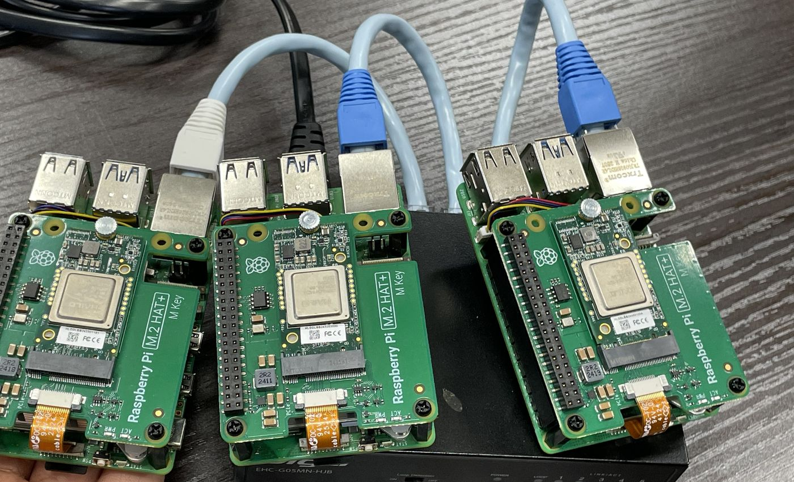
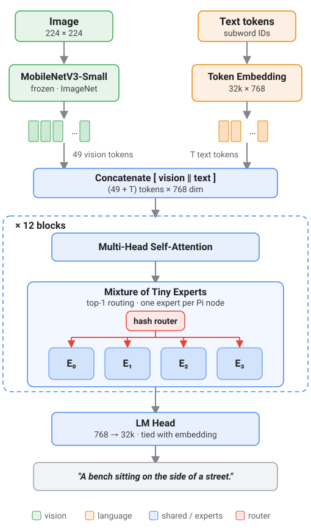

MoTE-VLM: a vision-language model on a Raspberry Pi cluster
I replace the feed-forward layers of a transformer with small experts and place one expert on each Raspberry Pi. The latest version is a 206M-parameter model that runs entirely on four Pi 5 boards with no GPU, and captions COCO images at 70.4 CIDEr.


What changes when the GPU is removed
Measured latency as Pi nodes are added (lower is better). The two setups time different things, so compare the trends, not the numbers.
Without a GPU, spreading the model across Pis does not make it faster. What it does is split the memory: no single board has to hold the whole model, which is what would let a cluster run models too big for one board.